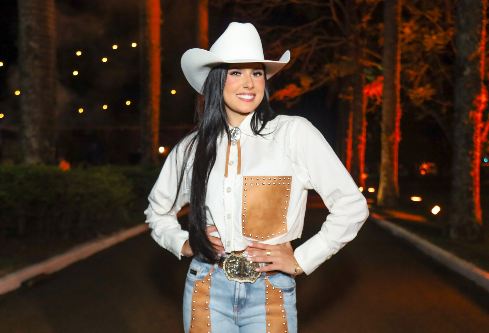
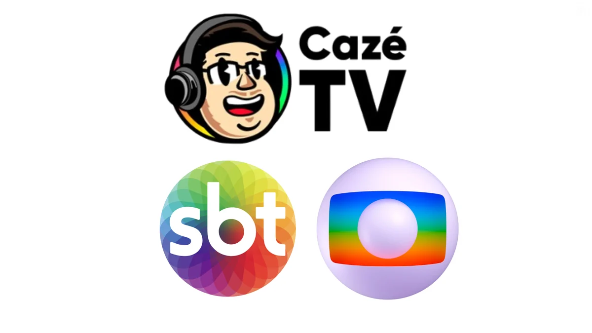
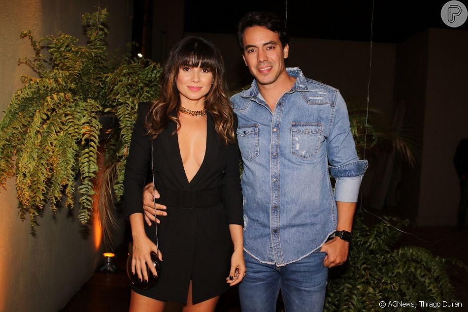

Famosos
Há 18 minutos
Ana Castela anuncia medidas judiciais após rumores de traição
Cantora se pronunciou sobre as publicações e informou que o caso será tratado por seus representantes.
As histórias mais comentadas de famosos, música, televisão e cinema.

FamososCantora se pronunciou sobre as publicações e informou que o caso será tratado por seus representantes.

Emissora registra ampla audiência com a estreia da cobertura esportiva e programação especial.
Há 2 horas
Cantor destacou o incentivo da esposa durante o processo de mudança de hábitos.
Há 3 horas
Ator integra a segunda fase da trama e será o novo interesse amoroso de Pilar.
Há 4 horas
Atriz e dançarina participou da história da animação clássica de Peter Pan.
Ontem, 22:40Detalhes da trama colocam Doutor Destino em destaque e movimentam as redes entre fãs.
Ontem, 22:02
Cantora compartilhou registros da viagem do casal e recebeu mensagens dos fãs.
Ontem, 21:15Nenhuma notícia encontrada para este filtro.